토목기사 (2005-09-04 기출문제)
1과목: 응용역학
1. 길이 ℓ인 양단고정보 중앙에 100kg의 집중하중이 작용 하여 중앙점의 처짐이 1mm 이하가 되려면 ℓ은 최대 얼마이하이어야 하는가? (단, E=2×106kg/cm2, I=10cm4임)
- 0.72m
- 1m
- 1.24m
- 1.56m
(정답률: 36%)

2. 다음의 1차 부정정보에서 A 점의 모멘트 MA의 값은? (단, EI는 일정하다.)
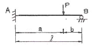
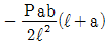
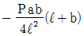
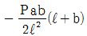
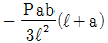
(정답률: 48%)
3. 그림과 같은 1m 의 지름을 가진 차륜이 높이 0.2m의 장애물을 넘어가기 위해서 최소로 필요한 수평력은? (단, 차륜의 자중 W=1.5t)
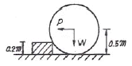
- 1.33t 이상
- 2.33t 이상
- 2.0t 이상
- 1.0t 이상
(정답률: 알수없음)
4. 다음 4가지 종류의 기둥에서 강도의 크기순으로 옳게된 것은? (단, 부재는 등질 등단면이고 길이는 같다.)
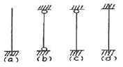
- (a)＞(b)＞(c)＞(d)
- (a)＞(c)＞(b)＞(d)
- (d)＞(b)＞(c)＞(a)
- (d)＞(c)＞(b)＞(a)
(정답률: 62%)
5. 트러스 해석시 가정을 설명한 것 중 틀린 것은?
- 부재들은 양단에서 마찰이 없는 핀으로 연결되어 진다.
- 하중과 반력은 모두 트러스의 격점에만 작용한다.
- 부재의 도심축은 직선이며 연결핀의 중심을 지난다.
- 하중으로 인한 트러스의 변형을 고려하여 부재력을 산출한다.
(정답률: 82%)
6. 그림과 같은 트러스에서 부재력이 0인 부재는 몇 개 인가?
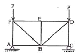
- 3개
- 4개
- 5개
- 7개
(정답률: 43%)
7. 다음 구조물에서 최대처짐이 일어나는 위치까지의 거리 Xm를 구하면?
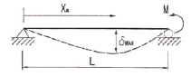
- L/2
- 2L/3
- L/√3
- 2L/√3
(정답률: 67%)
8. 다음 그림에서 보는 바와 같이 균일 단면봉이 축인장력을 받는다. 이 때 단면 p-q 에 생기는 전단응력 τ는? (단, 여기서 m-n 은 수직단면이고, p-q는 수직단면과 ø=45°의 각을 이루고, A는 봉의 단면적이다.)
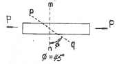
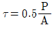
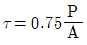
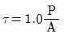
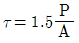
(정답률: 16%)
9. 그림과 같은 단면의 주축에 대한 단면 2차 모멘트가 각각 Ix=72cm4, Iy=32cm4 이다. x축과 30°를 이루고 있는 u축에 대한 단면 2차 모멘트가 Iu=62cm4 일 때 v축에 대한 단면 2차 모멘트 Iy는?
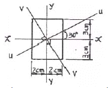
- Iv=32cm4
- Iv=37cm4
- Iv=42cm4
- Iv=47cm4
(정답률: 50%)
10. 그림과 같은 단면에서 직사각형 단면의 최대 전단응력도는 원형단면의 최대 전단응력도의 몇 배인가? (단, 두 단면적과 작용하는 전단력의 크기는 같다.)
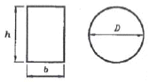
- 9/8배
- 8/9배
- 6/5배
- 5/6배
(정답률: 22%)
11. 그림과 같은 3경간 연속보의 B점이 5cm 아래로 침하하고 C점이 2cm 위로 상승하는 변위를 각각 보였을 때 B점의 휨모멘트 MB를 구한 값은? (단, EI=8×1010kg∙cm2로 일정)
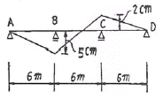
- 3.52×106 (kg∙cm)
- 4.85×106(kg∙cm)
- 5.07×106 (kg∙cm)
- 6.23×106(kg∙cm)
(정답률: 알수없음)
12. 한 점에 F1=3,000kg, F2=4,000kg 이 30°각을 이루고 작용할 때 합력의 크기는?
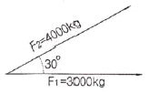
- 4827 kg
- 5463 kg
- 6766 kg
- 5228 kg
(정답률: 59%)
13. 다음 중 탄성계수를 옳게 나타낸 것은? (단, A : 단면적, ℓ : 길이, P : 하중, △ℓ : 변형량)
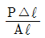
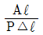
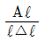
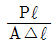
(정답률: 50%)
14. 다음과 같은 부정정 구조물에 지점 B에서의 휨모멘트
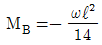
일 때 고정단 A에서의 휨모멘트는?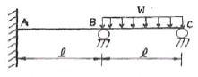
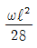
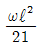
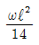
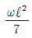
(정답률: 알수없음)
15. 다음 내민보에서 B점의 모멘트와 C점의 모멘트의 절대 값의 크기를 같게 하기 위한 L/a값을 구하면?
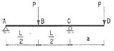
- 6
- 4.5
- 4
- 3
(정답률: 40%)
16. 지점 B에서의 수직반력의 크기는?
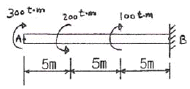
- 0 t
- 5 t
- 10 t
- 20 t
(정답률: 60%)
17. 그림과 같은 단면이 267.5 tonfㆍm의 휨모멘트를 받을 때 플랜지(Flange)와 복부(Web)의 경계면 mn에 일어나 는 휨응력으로 옳은 것은?
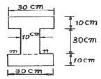
- 1284 kg/cm2
- 1500 kg/cm2
- 2500 kg/cm2
- 2816 kg/cm2
(정답률: 알수없음)
18. 직경 d인 원형단면 기둥의 길이가 4m이다. 세장비가 100이 되도록 하자면 이 기둥의 직경은?
- 12cm
- 16cm
- 18cm
- 20cm
(정답률: 73%)
19. 그림과 같은 캔틸레버보에서 자유단 A의 처짐은? (단, EI는 일정함)
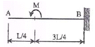
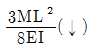
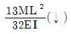
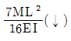
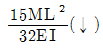
(정답률: 37%)
20. 다음과 같이 D 점이 힌지인 게르버보에서 A점의 반력은 얼마인가?
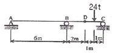
- 3 t(↓)
- 4 t(↓)
- 5 t(↑)
- 6 t(↑)
(정답률: 47%)
2과목: 측량학
21. 초점거리 210mm, 사진의 크기 18cm×18cm, 평탄한 지역의 항공 사진상 주점기선장은 70mm였다. 이 항공사진의 축척은 1/20,000로 하면 비고 200m에 대한 시차차는?
- 2.2mm
- 3.3mm
- 4.4mm
- 5.5mm
(정답률: 알수없음)
22. 곡선 반지름 R=600m, 교각 I=60°00′일 때 노선 측량에서 원곡선 설치시 장현의 길이는?
- 682.56m
- 600.00m
- 346.41m
- 80.38m
(정답률: 19%)
23. 축척 1/500 도상에서 3변의 길이가 각각 20.5cm, 32.4cm, 28.5cm일 때 실제면적은?
- 288.53cm2
- 7213.26cm2
- 40.70cm2
- 6924.15cm2
(정답률: 알수없음)
24. 수준측량에서 발생할 수 있는 정오차에 해당하는 것은?
- 표척을 잘못 뽑아 발생되는 읽음 오차
- 광선의 굴절에 의한 오차
- 관측자의 시력 불완전에 의한 오차
- 태양의 광선, 바람, 습도 및 온도변화 등에 의해 발생되는 오차
(정답률: 59%)
25. A, B, C점에서의 중력탐사값을 이용하여 미지점 P의 중력값을 추정하고자 A, B, C로부터 P까지의 거리를 경중률로 활용하는 역거리가중치(Inverse Distance Weight ; IDW)기법을 사용했다. 이러한 역거리가중치 (IDW) 기법의 특징이 아닌 것은?
- 거리를 이용하여 비교적 쉽게 미지점 P의 중력값을 추정할 수 있으므로 측량에서 많이 이용된다.
- A, B, C 각 점에서 P까지의 거리는 보통 수평거리를 의미한다.
- 거리가 가까울수록 경중률이 높아진다.
- A, B, C 각 측점들과 P점간의 방향성도 함께 고려할 수 있다는 장점이 있다.
(정답률: 12%)
26. 우리나라 중부원점의 좌표값은?
- 38°00′N, 127°00′E
- 38°00′N, 129°00′E
- 38°00′N, 125°00′E
- 38°00′N, 123°00′E
(정답률: 알수없음)
27. 그림과 같이 현재의 단곡선 도로를 개수하여 단곡선 신설도로를 설치하려고 한다. 신설도로의 반경 R을 얼마로 해야 하는가? (단, 현재 도로의 교각은 90°, 반경은 500m이며, 신설 도로의 교각은 60°임)
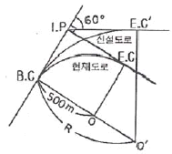
- 1256m
- 1732m
- 866m
- 453m
(정답률: 24%)
28. 곡선반지름 R, 교각 I 일 때 다음 공식 중 틀린 것은? (단, 접선길이 = T.L., 외할 = E, 중앙거 = M, 곡선길이 = C.L.)
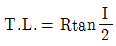
- C.L.=0.0174533RI
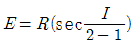
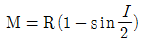
(정답률: 59%)
29. 하천측량에 대한 설명 중 옳지 않은 것은?
- 하천측량시 처음에 할 일은 도상조사로서 유로상황, 지역면적, 지형지물, 토지이용 상황 등을 조사 해야 한다.
- 심천측량은 하천의 수심 및 유수부분의 하저사항을 조사하고 횡단면도를 제작하는 측량을 말한다.
- 하천측량에서 수준측량을 할 때의 거리표는 하천의 중심에 직각방향으로 설치한다.
- 수위관측소의 위치는 지천의 합류점 및 분류점으로서 수위의 변화가 일어나기 쉬운 곳이 적당하다.
(정답률: 58%)
30. 어떤 횡단면적의 도상면적이 40.5cm2 였다. 가로 축척이 1/20, 세로 축척이 1/60 이였다면 실제면적은?
- 48.600cm2
- 33.750cm2
- 4.860cm2
- 3.375cm2
(정답률: 30%)
31. 등고선에 관한 다음 설명 중 옳지 않은 것은?
- 높이가 다른 등고선은 절대 교차하지 않는다.
- 등고선간의 최단거리 방향은 최급경사 방향을 나타낸다.
- 지도의 도면 내에서 폐합되는 경우 등고선의 내부에는 산꼭대기 또는 분지가 있다.
- 동일한 경사의 지표에서 등고선 간의 수평거리는 같다.
(정답률: 59%)
32. P점의 표고를 구하기 위하여 4개의 기지점 A, B, C, D에서 왕복수준측량의 결과가 다음과 같다. P점의 최확값은?
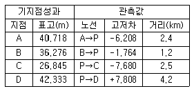
- 34.516m
- 34.929m
- 35.654m
- 35.967m
(정답률: 알수없음)
33. 1회 측정할 때 생기는 우연오차를 ±0.01m 라 하면 100회 연속하여 측정하였을 때의 발생하는 오차는?
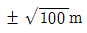
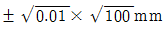
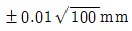
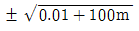
(정답률: 39%)
34. 삼각측량에서 망을 정삼각형에 가깝도록 구성하는 이유로 옳은 것은?
- 삼각망의 보기를 좋게 하기 위해서
- 좌표계산에서 동일한 각을 이용하므로써 계산의 편의를 위해서
- 각이 0°나 180°에 가까우면 표차가 커지므로 표차가 가장 작은 90°에 가깝게 하기 위해서
- 기존의 삼각망을 활용하기 위해서
(정답률: 알수없음)
35. 시가지에서 25변형 트래버스 측량을 실시하여 측각오차가 2′ 50″발생하였다. 어떻게 처리해야 하는가? (단, 시가지의 측각 허용범위 = 20″√n ~ 30″√n 이고 여기서 n은 트래버스의 측점 수)
- 각의 크기에 따라 배분한다.
- 오차가 허용오차 이상이므로 재측해야 한다.
- 변의 길이에 비례하여 배분한다.
- 변의 길이의 역수에 비례하여 배분한다.
(정답률: 알수없음)
36. 사갱의 고저차를 구하기 위해 측량을 하여 다음 결과를 얻었다. A, B 간의 고저차는 얼마인가? (단, A점의 기계고와 B점의 시준고는 천상(天上)으로부터 잰 값이다. A점의 기계고 = 1.15m, B점의 시준고 = 1.56m, 사거리 = 31.69m, 연직각 = +17°41′)
- 9.63m
- 10.04m
- 15.60m
- 31.69m
(정답률: 10%)
37. 한 점 A에 평판을 세우고 또 한 점 B에 세운 2m의 표척을 엘리데이드로 시준하니 눈금차가 6이었다. AB간의 수평거리는?
- 33m
- 45m
- 50m
- 55m
(정답률: 20%)
38. 직사각형의 2변이 각각 25m±2mm, 15m±3mm로 측정되었을 때에 그의 면적과 표준편차는?
- 375m2±0.06
- 375m2±0.08
- 375m2±0.10
- 375m2±0.12
(정답률: 알수없음)
39. 초점거리 153mm, 사진크기 23cm×23cm인 카메라를 사용하여 동서 14km, 남북 7km, 평균표고 250m로 거의 평탄한 사각형 지역을 축척 1/15000로 촬영하고자 한다. 필요한 모델 수는? (단, 종ㆍ횡 중복도는 각각 60%, 30%임)
- 21매
- 33매
- 49매
- 65매
(정답률: 10%)
40. 지형도의 이용법에 해당되지 않는 것은?
- 저수량 및 토공량 산정
- 유역면적의 도상 측정
- 간접적인 지적도 작성
- 등경사선 관측
(정답률: 53%)
3과목: 수리학 및 수문학
41. 후루드 수(Froude Number)가 1보다 큰 흐름은?
- 상류(常流)
- 사류(射流)
- 층류(層流)
- 난류(亂流)
(정답률: 알수없음)
42. 수심이 10cm이고 수로 폭이 20cm인 직사각형 개수로에서 유량 Q=80cm3/sec가 흐를 때 동점성계수 v=1.0×10-2cm2/s 이면 흐름은?
- 층류, 사류
- 층류, 상류
- 난류, 사류
- 난류, 상류
(정답률: 알수없음)
43. 다음 중 수문곡선의 기저유츌과 직접유출을 분리하는 방법이 아닌 것은?
- 지하수 감수곡선법
- 수평직선 분리법
- N-day 법
- Thiessen 방법
(정답률: 24%)
44. 부체의 배수용량(排水容量) V, 중심(重心) G와 부심(浮心) C의 거리
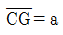
그리고 부양면에서의 최소단면 2차 모멘트를 I라고 할 때 이 부체의 안정 조건 식은?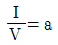
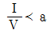
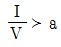
(정답률: 32%)
45. 면적이 20km2인 유역 내에 저수지를 건설하고자 한다. 연강우량, 접시증발량이 각각 1000mm, 800mm이고 유츌계수와 증발접시계수가 각각 0.4, 0.7이라 할 때 댐건설 후 하류의 하천유량 증가량은?
- 4.0×105m3
- 6.0×105m3
- 8.0×105m3
- 1.0×106m3
(정답률: 0%)
46. 베르누이의 정리에 관한 설명으로 틀린 것은?
- Euler의 운동방정식으로부터 적분하여 유도할 수 있다.
- 베르누이의 정리를 이용하여 Torricelli의 정리를 유도할 수 있다.
- 이상유체 유동에 대하여 기계적 일-에너지 방정식과 같은 것이다.
- 회전류의 경우는 모든 영역에서 성립한다.
(정답률: 알수없음)
47. 다음에서 배수곡선(背水曲線)이 생기는 영역(嶺域)은? (단, h는 측정수심, ho는 등류수심, hc는 한계수심이다.)
- h ＞ ho ＞ hc
- h ＜ ho ＜ hc
- h ＞ ho ＜ hc
- h ＜ ho ＞ hc
(정답률: 39%)
48. 그림과 같이 단면의 변화가 있는 단면에서 힘(F)를 구하는 운동량 방정식으로 옳은 표현은? (단, P = 압력, A = 단면적, Q = 유량, V = 속도, g = 중력가속도, r= 단위중량, ρ밀도)
- P1A1 + P2A2 - F = PQ(V2- V1)
- P1A1 - P2A2 - F = PQ(V2- V1)
- P1A1 - P2A2 - F = rQ(V1- V2)
- P1A1 - P2A2- F = ρQ(V2 - V1)
(정답률: 알수없음)
49. 흐르는 유체에 대한 마찰응력의 크기를 규정하는 뉴우톤의 점성법칙 함수를 구성하는 항으로 짝지어진 것은?
- 압력, 속도, 점성계수
- 각 변형률, 속도경사, 점성계수
- 온도, 점성계수
- 점성계수, 속도경사
(정답률: 알수없음)
50. 유출량 자료가 없는 경우에 유역의 토양특성과 식생피복상태 등에 대한 상세한 자료만으로서도 총우량으로 부터 유효우량을 산정할 수 있는 방법은?
- SCS법
- ø-지표법
- W-지표법
- f-지표법
(정답률: 34%)
51. 유역면적 200ha인 도시 소하천유역의 유수 도달시간이 5분이고, 유역 평균유출계수는 0.60이다. 강수자료의 해석으로부터 구해진 이 유역의 강우강도식 I=6500/(t+45)[mm/hr]이라면 첨두유출량은? (단, 강우지속시간 t는 분(min) 단위이다.)
- 4.334m3/sec
- 43.34m3/sec
- 433.4m3/sec
- 4334m3/sec
(정답률: 25%)
52. 한계수심에 대한 설명으로 옳지 않은 것은?
- 일정한 유량이 흐를 때 비에너지가 가장 큰 수심이다.
- 일정한 비에너지에서 최대 유량을 흐르게 할 수 있는 수심이다.
- 유량이 일정할 때 최소 비력(Specific Force)이 되는 수심이다.
- 상류에서 사류로 변할 경우에 한계수심이 지배단면이 될 수 있다.
(정답률: 10%)
53. 직사각형 위어에서 위어의 월류수두(h)에 2%의 오차가 생기면 유량에는 몇 % 의 오차가 발생되겠는가?
- 1%
- 2%
- 3%
- 4%
(정답률: 알수없음)
54. 어느 관측소의 자기우량기록이 다음 표와 같을 때 10분 지속 최대 강우강도는?
- 17mm/hr
- 48mm/hr
- 102mm/hr
- 120mm/h
(정답률: 54%)
55. 3m 폭을 가진 직사각형 수로에 사각형인 광정(廣頂)위어를 설치하려 한다. 위어 설치 전의 평균 유속은 1.5m/sec, 수심이 0.3m이고, 위어 설치 후의 평균 유속이 0.3m/sec 위어상류의 수심이 1.5m가 되었다면 위어의 높이 h는? (단, 에너지 보정계수 α=1.0로 본다.)
- 1.30m
- 1.10m
- 0.90m
- 0.70m
(정답률: 20%)
56. 최소 비에너지가 1m인 직사각형 수로에서 단위폭당 최대 유량은?
- 2.35m3/sec
- 2.26m3/sec
- 2.41m3/sec
- 2.38m3/sec
(정답률: 9%)
57. 어떤 수평관 속에 물이 2.8m/sec의 속도와 0.46kg/cm2의 압력으로 흐르고 있다. 이 물의 유량이 0.84m3/sec일 때 물의 동력은?
- 420마력
- 42마력
- 560마력
- 56마력
(정답률: 10%)
58. 개수로의 흐름에서 사류(射流)에서 상류(常流)로 변할때 가지고 있는 에너지의 일부를 와류와 난류를 통해소모하는 현상은?
- 한계수심(限界水深)
- 등류(等流)
- 도수(跳水)
- 저하곡선 수면(低下曲線 水面)
(정답률: 알수없음)
59. 단위도(단위 유량도)에 대한 설명으로 옳지 않은 것은?
- 단위도의 3가정은 일정기저시간 가정, 비례 가정, 중첩 가정이다.
- 단위도는 기저유량과 직접유출량을 포함하는 수문곡선이다.
- S-Curve를 이용하여 단위도의 단위시간을 변경할 수 있다.
- Snyder는 합성단위도법을 연구 발표하였다.
(정답률: 31%)
60. 그림과 같은 제방에서 단위폭당의 유량이 0.414×10-2m3/sec이라면 투수 계수는?
- 0.37cm/sec
- 0.47cm/sec
- 0.57cm/sec
- 0.67cm/sec
(정답률: 알수없음)
4과목: 철근콘크리트 및 강구조
61. 아래 그림의 지그재그로 구멍이 있는 판에서 순폭을 구하면? (단, 리벳구멍직경 = 25mm)
- bn = 187mm
- bn = 150mm
- bn = 141mm
- bn = 125mm
(정답률: 37%)
62. 그림과 같은 맞대기 용접의 인장응력은?
- 250 MPa
- 25 MPa
- 125 MPa
- 1250MPa
(정답률: 58%)
63. 그림에 나타난 직사각형 단철근보의 공칭 전단강도 Vn을 계산하면? (단, 철근 D13을 스터럽(Stirrup)으로 사용하며, 스터럽 간격은 150mm이다. 철근 D13 1본의 단면적은 126.7mm2 , fck=28MPa, fy=350MPa이다.)
- 120kN
- 133kN
- 253kN
- 385kN
(정답률: 알수없음)
64. 철근콘크리트 벽체의 철근배근에 대한 다음 설명 중 잘못된 것은?
- 동일 조건에서 최소 수직철근비가 최소 수평철근비 보다 크다.
- 지하실을 제외한 두께 250mm 이상의 벽체에 대해서는 수직 수평방향으로 벽면에 평행하게 양면으로 배근하여야 한다.
- 수직 및 수평철근의 간격은 벽두께의 3배 이하, 또한 400mm 이하로 하여야 한다.
- 수직철근이 집중배치된 벽체부분의 수직철근비가 0.01배 미만인 경우에는 횡방향 띠철근을 설치하지 않을 수 있다.
(정답률: 알수없음)
65. 강도설계법의 기본 가정으로 옳지 않은 것은?
- 철근과 콘크리트의 변형률은 중립축으로부터의 거리에 비례한다.
- 콘크리트의 압축연단의 최대 변형률은 0.003으로 한다.
- 콘크리트의 인장강도는 철근 콘크리트 휨 계산에서 무시한다.
- 콘크리트의 압축응력은 중립축으로부터의 거리에 비례한다.
(정답률: 알수없음)
66. 폭 b = 300mm, 유효깊이 d = 500mm이고 균형철근비ρb=0.0375일 때 최대 철근량은?
- 2210mm2
- 3214mm2
- 4219mm2
- 5206mm2
(정답률: 알수없음)
67. 그림과 같은 단순 PSC 보에서 등분포하중 (자중포함)ω=30kN/m가 작용하고 있다. 프리스트레스에 의한 상향력과 이 등분포 하중이 비기기 위해서는 프리스트레스 힘 P를 얼마로 도입해야 하는가?
- 900 kN
- 1200 kN
- 1500 kN
- 1800 kN
(정답률: 46%)
68. 강도설계법에서 복철근 직사각형보의 중립축까지의 거리 c=300mm일 때 압축연단에서 50mm 떨어진 곳에 배치된 압축 철근의 응력 fs′은 얼마인가? (여기서, 철근의 항복강도는 300MPa이고, 철근의 탄성계수는 2.0×105 MPa이다.)
- 200MPa
- 300MPa
- 259MPa
- 500MPa
(정답률: 알수없음)
69. 철근콘크리트 휨부재에서 최대철근비와 최소철근비를 규정한 이유로 가장 적당한 것은?
- 부재의 경제적인 단면 설계를 위해서
- 부재의 사용성을 증진시키기 위해서
- 부재의 파괴에 대한 안전을 확보하기 위해서
- 부재의 급작스런 파괴를 방지하기 위해서
(정답률: 알수없음)
70. b = 350mm, d = 550mm인 직사각형 단면의 보에서 지속 하중에 의한 순간처짐이 16mm였다. 1년 후 총 처짐량은 얼마인가? (단, As=2246mm2, As=1284mm2, ꒲=1.4)
- 20.5mm
- 32.8mm
- 42.1mm
- 26.5mm
(정답률: 37%)
71. bw=250mm, d=500mm, fck= 24MPa, fy=400MPa인 직사각형 보에서 콘크리트가 부담하는 설계전단강도(øVc)는?
- 81.6 kN
- 86.3 kN
- 94.7 kN
- 98.5 kN
(정답률: 알수없음)
72. 강도설계법에서 하중계수에 관한 규정 중 틀린 것은?
- 고정하중(D)와 활하중(L)이 작용하는 경우 : U = 1.4D + 1.7L
- 지하구조물과 같이 고정하중이 지배적인 구조물 : U = 1.4 × 1.1D + 1.7L
- 고정하중(D)과 풍하중(W)의 재하효과가 서로 상쇄되는 경우 고려해야 할 하중조합 : U = 0.9D + 1.3W
- 고정하중(D)과 지진하중(E)의 재하효과가 서로 상쇄되는 경우 고려해야 할 하중조합 : U = 0.9D + 1.3E
(정답률: 9%)
73. 계수하중에 의한 단면의 계수 모멘트가 Mu=350kN∙m인 단철근 직사각형 보의 유효깊이는? (단, ρ=0.0135, b=300mm, fck= 24MPa, fy=300Mpa)
- 285mm
- 382mm
- 586mm
- 611mm
(정답률: 42%)
74. 다음 그림과 같이 w=45kN/m 일 때 PS강재가 단면 중심에서 긴장되며 인장측의 콘크리트 응력이 0이 되려면 PS강재에 얼마의 긴장력이 작용하여야 하는가?
- 42⑤ kN
- 4625 kN
- 52⑤ kN
- 5625 kN
(정답률: 54%)
75. 단면 400mm×400mm 인 중심축하중을 받는 기둥(단주)에 4-D25(Ast=2027mm2)의 축방향 철근이 배근되어 있다. 이 기둥의 변형률이 Є=0.001에 도달하게 될 때, 방향 하중의 크기는 약 얼마인가? (단, 콘크리트의 응력 fc=15MPa이며, fck=24MPa, fy=300MPa이다.)
- 1782 kN
- 2775 kN
- 3787 kN
- 4783 kN
(정답률: 38%)
76. 그림과 같은 프리스트레스 콘크리트 단면의 설계휨강도를 구하면? (단, fck=35MPa, fps=1700MPa이고 과소보강 되었다고 가정한다.)
- 403 kN∙m
- 419 kN∙m
- 425 kN∙m
- 437 kN∙m
(정답률: 39%)
77. 철근콘크리트 보에서 스터럽을 배근하는 주목적은?
- 철근의 인장강도가 부족하기 때문
- 부착응력을 늘리기 위하여
- 콘크리트의 사인장 강도가 부족하기 때문
- 콘크리트의 탄성을 높이기 위하여
(정답률: 34%)
78. 철근콘크리트 부재에서 균열 폭 제한을 위한 가장 적절한 조치는? (단, 부재단면 및 철근량은 일정)
- 가능한 한 직경이 작은 이형철근을 배근한다.
- 가능한 한 콘크리트 피복두께를 두껍게 한다.
- 가능한 한 배근간격을 넓힌다.
- 가능한 한 직경이 큰 이형철근을 배근하다.
(정답률: 40%)
79. 2방향 슬래브 설계시 직접설계법을 적용할 수 있는 제한사항에 대한 설명 중 틀린 것은?
- 각 방향으로 3경간 이상이 연속되어야 한다.
- 각 방향으로 연속한 받침부 중심간 경간 길이의 차이는 긴 경간의 1/3 이하이어야 한다.
- 연속한 기둥 중심선으로부터 기둥의 이탈은 이탈방향 경간의 10%까지 허용한다.
- 모든 하중은 슬래브판 전체에 연직으로 작용하며, 고정하중의 크기는 활하중의 2배 이하이어야 한다.
(정답률: 22%)
80. 압축이형철근의 정착에 대한 다음 설명 중 잘못된 것은?
- 정착길이는 기본정착길이에 적용 가능한 모든 보정계수를 곱하여 구한다.
- 정착길이는 항상 200mm 이상이어야 한다.
- 해석결과 요구되는 철근량을 초과하여 배치한 경우의 보정계수는 (소요 As/배근 As) 이다.
- 표준 갈고리를 갖는 압축이형철근의 보정계수는 0.75 이다.
(정답률: 20%)
5과목: 토질 및 기초
81. Meyerhof의 극한지지력 공식에서 사용하지 않는 계수는?
- 형상계수
- 깊이계수
- 시간계수
- 하중경사계수
(정답률: 29%)
82. 점토층으로부터 흙시료를 채취하여 압밀시험을 한 결과 하중강도가 3.0kg/cm2로부터 4.6kg/cm2로 증가했을 때 간극비는 2.7로부터 1.9로 감소하였다. 압축계수(av)는 얼마인가?
- 0.5(cm2/kg)
- 0.6(cm2/kg)
- 0.7(cm2/kg)
- 0.8(cm2/kg)
(정답률: 31%)
83. 다음 그림에서 옹벽에 작용하는 수평력은 얼마인가?
- 40.5t/m
- 45.5t/m
- 50.3t/m
- 55.3t/m
(정답률: 31%)
84. 절편법을 이용한 사면 안정해석 중 가상파괴면의 한절편에 작용하는 힘의 상태를 그림으로 나타내었다. 다음 설명 중 잘못된 것은?
- Swedish(Fellenius)법에서는 Tn과 Pn의 합력이 Pn+1과 Tn+1의 합력과 같고 작용선도 일치한다고 가정하였다.
- Bishop의 간편법에서는 Pn+1-Pn=0 이고 Tn-Tn+1=0으로 가정하였다.
- 절편의 전중량 W=(흙의 단위중량×절편의 높이×절편의 폭)이다.
- 안전율은 파괴원의 중심 O에서 저항전단모멘트를 활동모멘트로 나눈값이다.
(정답률: 17%)
85. 어떤 흙에 있어서 함수비는 18%, 비중은 2.65, 공극비는 0.56일 때 이 흙의 포화도는?
- 0%
- 18%
- 56%
- 85%
(정답률: 알수없음)
86. 그림과 같은 지반에서 하중으로 인하여 수직응력(△σ1)이 1.0kg/cm2이 증가되고 수평응력(△σ3)이 0.5kg/cm2이 증가되었다면 간극수압은 얼마나 증가되었는가? (단, 간극수압계수 A=0.5이고 B=1이다.)
- 0.50kg/cm2
- 0.75kg/cm2
- 1.00kg/cm2
- 1.25kg/cm2
(정답률: 20%)
87. 어떤 모래의 비중이 2.64이고 간극비가 0.75일 때 이 모래의 한계동수경사(限界動水傾斜)는?
- 0.45
- 0.64
- 0.94
- 1.52
(정답률: 34%)
88. 흙의 다짐에 관한 설명 중 옳지 않은 것은?
- 다짐에너지가 커지면 γ=dmax는 커지고, Wopt는 작아진다.
- 양입도 일수록 γ=dmax는 커지고, 빈입도 일수록 γ=dmax는 작아진다.
- 조립토 일수록 γ=dmax가 크며 Wopt도 크다.
- 점성토는 다짐곡선이 완만하고 조립토는 급경사를 이룬다.
(정답률: 알수없음)
89. 그림에서 분사현상에 대하여 안전율 2.5 이상이 되기위해서는 △h를 최대 얼마 이하로 하여야 하는가? (단, 간극률(n)=0.5)
- 18.6cm 이하
- 16.6cm 이하
- 14.6cm 이하
- 12.6cm 이하
(정답률: 50%)
90. 다음 그림에서 얕은 기초의 파괴 영역이다. 설명이 옳은 것은?
- 파괴순서는 Ⅲ→Ⅱ→Ⅰ이다.
- 영역 Ⅲ에서 수평면과 45°+ ø/2의 각을 이룬다.
- 영역 Ⅲ은 수동영역이다.
- 국부전단파괴의 형상이다.
(정답률: 28%)
91. 흙의 전단강도에 대한 다음 설명 중 옳지 않은 것은?
- 흙의 전단강도는 압축강도의 크기와 관계가 깊다.
- 외력이 가해지면 전단응력이 발생하고 어느 면에 전단응력이 전단강도를 초과하면 그 면에 따라 활동이 일어나서 파괴된다.
- 조밀한 모래는 전단중에 팽창하고 느슨한 모래는 수축한다.
- 점착력과 내부마찰각은 파괴면에 작용하는 수직응력의 크기에 비례한다.
(정답률: 알수없음)
92. 전체 시추코아 길이가 150cm 이고 이중 회수된 코아 길이의 합이 80cm 이었으며, 10cm 이상인 코아 길이의 합이 70cm 였을 때 암질의 상태를 판별하면?
- 매우불량(Very Poor)
- 불량(Poor)
- 보통(Fair)
- 양호(Good)
(정답률: 알수없음)
93. 물로 포화된 실트질 세사(細砂)의 N치를 측정한 결과 N = 33이 되었다고 할 때 수정 N치는? (단, 측정지점 까지의 로드(Rod)길이는 35m이다.)
- 43
- 35
- 21
- 18
(정답률: 알수없음)
94. 3층 구조로 구조결합 사이에 치환성 양이온이 있어서 활성이 크고 시트 사이에 물이 들어가 팽창 수축이 크고 공학적 안정성은 약한 점토 광물은?
- Kaolinite
- Illite
- Montmorillonite
- Sand
(정답률: 알수없음)
95. 액화 현상(Liquefaction)에 대한 설명으로 틀린 것은?
- 포화된 느슨한 모래에서 흔히 일어난다.
- 간극수가 배출되지 못할 때 일어나게 된다.
- 한계간극비에 크게 관련된다.
- 과잉 간극수압은 갑자기 크게 감소한다.
(정답률: 25%)
96. 다음 중 부마찰력이 발생할 수 있는 경우가 아닌 것은?
- 매립된 생활쓰레기 중에 시공된 관측정
- 붕적토에 시공된 말뚝기초
- 성토한 연약점토지반에 시공된 말뚝기초
- 다짐된 사질지반에 시공된 말뚝기초
(정답률: 34%)
97. 다음 그림과 같이 점토질 지반에 연속기초가 설치되어있다. Terzaghi 공식에 의한 이 기초의 허용 지지력 qa는 얼마인가? (단, ø=0이며, Nc=5.14, Nq=1.0, Nr=0, 안전율 Fs=3이다.)
- 6.4 t/m2
- 13.5 t/m2
- 18.5 t/m2
- 40.49 t/m2
(정답률: 28%)
98. 아래 그림에서 투수계수K= 4.8×10-3 cm/sec 일 때 Darcy 유츌속도 V와 실제 물의 속도(침투속도) Vs는?
- V=3.4×10-4cm/sec, Vs=5.6×10-4cm/sec
- V=3.4×10-4cm/sec, Vs=9.4×10-4cm/sec
- V=5.8×10-4cm/sec, Vs=10.8×10-4cm/sec
- V=5.8×10-4cm/sec, Vs=13.2×10-4cm/sec
(정답률: 39%)
99. 흙의 다짐시험을 실시한 결과 다음과 같았다. 이 흙의 건조단위중량은 얼마인가?
- 1.35g/cm3
- 1.56g/cm3
- 1.31g/cm3
- 1.42g/cm3
(정답률: 30%)
100. 흐트러진 흙은 자연상태의 흙에 비해서 다음과 같은 차이점이 있다. 다음 중 옳지 않은 것은?
- 투수성이 크다.
- 전단강도가 낮다.
- 밀도가 낮다.
- 압축성이 작다.
(정답률: 24%)
6과목: 상하수도공학
101. 호소의 부영양화에 관한 다음 설명 중 틀린 것은?
- 부영양화의 원인물질은 질소와 인 성분이다.
- 부영양화된 호소에서는 조류의 성장이 왕성하여 수심이 깊은 곳까지 용존산소 농도가 높다.
- 조류의 영향으로 물에 맛과 냄새과 발생되어 정수에 어려움을 유발시킨다.
- 부영양화는 수심이 낮은 호소에서도 잘 발생된다.
(정답률: 알수없음)
102. 다음 중 합류식 하수도에 대한 설명이 아닌 것은?
- 청천시에는 수위가 낮고 유속이 적어 오물이 침전하기 쉽다.
- 우천시에는 처리장으로 다량의 토사가 유입되어 침전지에 퇴적된다.
- 단일관로로 오수와 우수를 배제하기 때문에 침수 피해의 다발 지역이나 우수배제 시설이 정비되지 않은 지역에서는 유리한 방식이다.
- 소규모 강우시 강우 초기에 도로나 관로 내에 퇴적된 오염물이 그대로 강으로 합류할 수 있다.
(정답률: 31%)
103. 배수관의 관망 중 수지상식(Branching System)에 관한 설명으로 알맞은 것은?
- 관을 그물 모양처럼 연결하는 방식이다.
- 수리계산이 간단하고 비교적 정확하다.
- 사고시 단수되는 구간을 최소화할 수 있다.
- 관의 설치시 비교적 공사비가 많이 든다.
(정답률: 알수없음)
104. 도수 및 송수관로 계획에 대한 설명으로 옳지 않은 것은?
- 비정상적 수압을 받지 않도록 한다.
- 수평 및 수직의 급격한 굴곡을 많이 이용하여 자연 유하식이 되도록 한다.
- 가능한 한 단거리가 되도록 한다.
- 최소한의 공사비가 소요되는 곳을 택한다.
(정답률: 67%)
1⑤. 활성슬러지법과 비교하여 생물막법의 특징으로 옳지 않은 것은?
- 운전조작이 간단하다.
- 하수량 증가에 대응하기 쉽다.
- 반응조를 다단화 하여 반응효율과 처리안정성 향상이 도모된다.
- 생물 중 분포가 단순하여 처리효율을 높일 수 있다.
(정답률: 31%)
106. 활성 슬러지의 SVI가 현저하게 증가되어 응집성이 나빠져 최종 침전지에서 처리수의 분리가 곤란하게 되었다. 이것은 활성슬러지의 어떤 이상 현상에 해당 되는가?
- 활성슬러지의 팽화
- 활성슬러지의 해체
- 활성슬러지의 부패
- 활성슬러지의 상승
(정답률: 알수없음)
107. 다음은 급수용 저수지의 필요수량을 결정하기 위한 유량누가곡선도이다. 틀린 설명은?
- 필요(유효)저수량은
 이다.
이다. - 저수시작점은 C 이다.
 구간에서는 저수지의 수위가 상승한다.
구간에서는 저수지의 수위가 상승한다.- 이론적 산출방법으로 Ripple's Method라 한다.
(정답률: 알수없음)
108. 다음 설명 중 옳지 않은 것은?
- BOD는 유기물이 호기성 상태에서 분해ㆍ안전화 되는데 요구되는 산소량이다.
- BOD는 보통 20℃에서 5일간 시료를 배양했을 때 소비된 용존산소량으로 표시된다.
- BOD가 과도하게 높으면 DO는 감소하며 악취가 발생된다.
- BOD, COD는 오염의 지표로서 하수 중의 용존산소량을 나타낸다.
(정답률: 40%)
109. 다음 중 상수의 일반적인 정수과정으로 옳은 것은?
- 여과 → 침전 → 살균
- 침전 → 여과 → 살균
- 살균 → 침전 → 여과
- 침전 → 살균 → 여과
(정답률: 알수없음)
110. BOD5가 155mg/L인 폐수가 있다. 탈산소계수(K1)가 0.2/day일 때 4일 후에 남아 있는 BOD는? (단, 탈산소계수는 상용대수 기준)
- 27.3mg/L
- 56.4mg/L
- 127.5mg/L
- 172.2mg/L
(정답률: 30%)
111. 합류관거나 우수관거가 오수관거보다 최저 유속이 높게 규정되어 있다. 다음 중 그 이유로 가장 타당한 것은?
- 배수를 더 빨리 하기 위해서
- 경사가 크기 때문에
- 유량이 더 많기 때문에
- 침전물의 비중이 더 높기 때문에
(정답률: 46%)
112. 유입하수량 1,000m3 /day, 유입하수의 BOD농도 200mg/L인 오수를 활성슬러지법으로 처리하기 위하여 설계 하려고 한다. 폭기조의 MLSS 농도를 2,000mg/L 유지하고, F/M비를 0.2로 운전할 경우 폭기조의 수리학적체류시간은?
- 4hr
- 6hr
- 8hr
- 12hr
(정답률: 알수없음)
113. 상수도 시설 중 접합정에 관한 설명으로 가장 옳은 것은?
- 복류수를 취수하기 위해 매설한 유공관거 시설
- 상부를 개방하지 않은 수로시설
- 배수지 등의 유입수의 수위조절과 양수를 위한 시설
- 관로의 도중에 설치하여 주로 관로의 수압을 조절 할 목적으로 설치하는 시설
(정답률: 50%)
114. 그림에서 A점에서부터 B점으로의 유량은 1.2L/sec 이다. ①, ②관로의 유량은 각각 얼마인가? (단, ①관로의 마찰손실계수 = 0.0328, ②관로의 마찰손실계수= 0.0306이고, 굴곡부는 각 관로에 2개소로서 2개소의 손실계수는 동일하게 각각 fb= 0.2이다.)
- Q1=0.35 L/sec, Q2=0.85 L/sec
- Q1=0.25 L/sec, Q2=0.95 L/sec
- Q1=0.55 L/sec, Q2=0.65 L/sec
- Q1=0.45 L/sec, Q2=0.75 L/sec
(정답률: 알수없음)
115. P도시에서 1985년도의 인구를 현재 인구라고 할 때 현재부터 10년 후의 인구를 등비급수법으로 추정한 값으로 옳은 것은?
- 약 47,500명
- 약 49,700명
- 약 53,800명
- 약 56,300명
(정답률: 0%)
116. 정수장에서 전염소처리법(Perchlor Ination)의 목적으로 적합지 않은 것은?
- 세균을 제거한다.
- 암모니아성질소와 유기물 등을 제거한다.
- 철, 망간을 제거한다.
- 적정한 잔류염소량을 유지시킨다.
(정답률: 15%)
117. 유역면적이 5ha이고 유입시간이 8분, 유출계수가 0.75일 때 하수관거의 유량은 얼마인가? (단, 하수 관거 길이는 1km, 하수관거내 유속은 40m/min이며, 강우강도 I = 3,970/(t+31)mm/hr, t의 단위는 [분])
- 0.43m3/sec
- 0.65m3/sec
- 0.87m3/sec
- 1.06m3/sec
(정답률: 19%)
118. 펌프의 흡입관에 대한 다음 사항 중 틀린 것은?
- 충분한 흡입수두를 가질 수 있도록 한다.
- 흡입관은 가능하면 수평으로 설치되도록 한다.
- 흡입관에는 공기가 혼입되지 않도록 한다.
- 펌프 한 대에 하나의 흡입관을 설치한다.
(정답률: 10%)
119. 오존을 사용하여 살균처리를 할 경우의 장점에 대한 설명 중 틀린 것은?
- 살균효과가 염소보다 뛰어나다.
- 오존이 수중 유기물과 작용하여 다른 물질로 잔류하게 되므로 잔류효과가 크다.
- 맛, 냄새물질과 색도제거의 효과가 우수하다.
- 유기물질의 생분해성을 증가시킨다.
(정답률: 알수없음)
120. 일반 상수에서 경도(Hardness)를 유발하는 주된 물질은?
- Ca2+, Mg2+
- Al2+, Na+
- SO42-, NO3-
- Mn2+, Zn2+
(정답률: 19%)
δ = (FL3) / (48EI)
여기서 F는 하중, L은 보의 길이, E는 탄성계수, I는 단면의 모멘트 of inertia를 나타낸다.
문제에서 주어진 조건에 따라, F = 100kg, E = 2×106kg/cm2, I = 10cm4이다. 따라서, 위의 공식을 대입하면 다음과 같다.
1mm = (100kg × L3) / (48 × 2×106kg/cm2 × 10cm4)
이를 정리하면,
L3 = 0.48 × 106
L = (0.48 × 106)1/3
L = 1.56m (소수점 이하 버림)
따라서, 보의 길이 ℓ은 최대 1.56m 이하여야 한다.